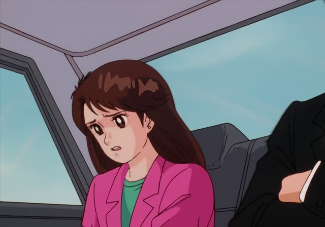
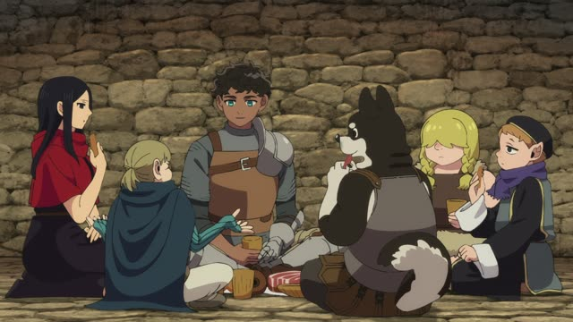
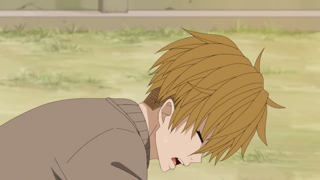
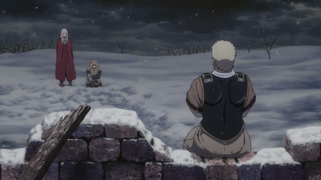
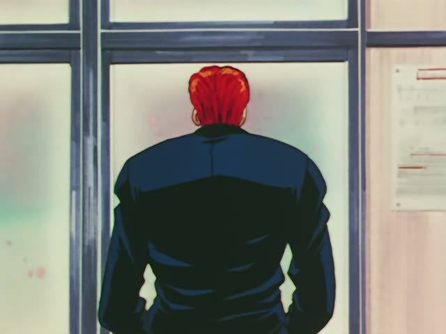

～続ける

Oishinbo · Episode 25
おかしいおかしいと思い続けていたんです。
"I kept thinking something was off."
～続ける means "keep doing, go on doing". Take the ます-stem and add 続ける: 思います → 思い続ける, 食べます → 食べ続ける.
On this card, a cook explains he kept feeling that the hamburgers weren't right. んです makes it polite.
Compare: 始める (start doing), 続ける (keep doing), 終わる (finish doing).
Good Morning Call · Episode 13
あと、上映中ポップコーン食べ続ける奴。
"And people who keep eating popcorn during the movie." [people he can't stand at the movies]
On this card, Uehara lists what annoys him at the cinema. 食べ続ける: eating and eating, without stopping.
Quick Examples
Your friend asks how you got so good.
毎日練習し続けました。
"I kept practicing every day."
PoliteA long phone call.
彼女は１時間話し続けた。
"She kept talking for an hour."
CasualYour teacher's advice.
あきらめないで、勉強し続けてください。
"Don't give up, keep studying."
PoliteThe rain won't stop.
朝からずっと降り続けてる。
"It's been raining nonstop since morning."
CasualWith and without
走った。
"I ran."
走り続けた。
"I kept running." It went on and on.
Examples from Media
Death Note · Episode 22
永遠に手の平の上で遊ばれ続けるか…です。
"...or be toyed with in their palm forever."
遊ばれ続ける = keep being played with.
Oishinbo · Episode 26
一生懸命作り続けるつもりよ。
"I mean to keep cooking with all my heart."
No matter how late her husband comes home.

Dungeon Meshi · Episode 14
太り続けて破裂しないかな。
"I hope he keeps getting fatter till he bursts."

Kotaro Lives Alone · Episode 6
なぁ、お前は１人で努力し続けて
"Hey, you keep working hard all on your own..."
Shirokuma Cafe · Episode 26
俺たちの魂の中で生き続けてんじゃん。
"He lives on in our souls."

Vinland Saga · Episode 22
おふくろの一族は、それを待ち続けた。
"My mother's people kept waiting for that."
Samurai Champloo · Episode 9
我を忘れて踊り続けた。
"They kept dancing, lost in it."

Slam Dunk · Episode 21
５０人もの女性に振られ続けた桜木花道
"Sakuragi Hanamichi, who kept getting dumped by fifty girls"